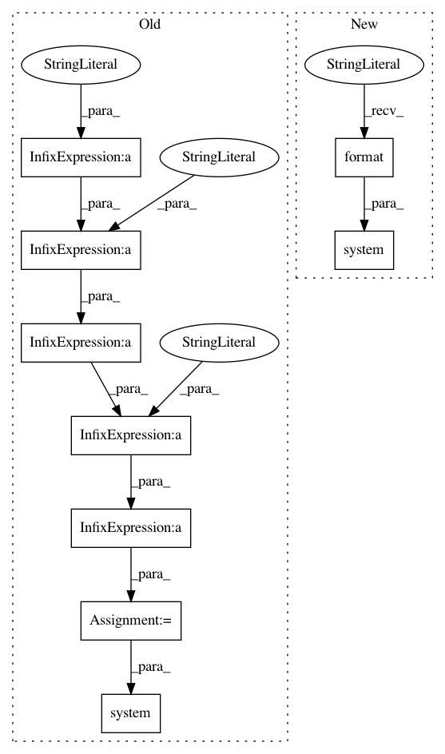

3108bf444028e7ab929f78da794f680aa84c2782,pynets/nodemaker.py,,mask_roi,#Any#Any#Any#Any#,1055
Before Change
if roi and mask:
print("Refining ROI...")
roi_red_path = "%s%s%s%s" % (dir_path, "/", op.basename(roi).split(".")[0], "_mask.nii.gz")
cmd = "fslmaths " + roi + " -mas " + mask + " -mas " + img_mask_path + " -bin " + roi_red_path
os.system(cmd)
roi = roi_red_path
return roi
After Change
if roi and mask:
print("Refining ROI...")
roi_red_path = "%s%s%s%s" % (dir_path, "/", op.basename(roi).split(".")[0], "_mask.nii.gz")
os.system("fslmaths {} -mas {} -mas {} -bin {}".format(roi, mask, img_mask_path, roi_red_path))
roi = roi_red_path
return roi
In pattern: SUPERPATTERN
Frequency: 3
Non-data size: 9
Instances
Project Name: dPys/PyNets
Commit Name: 3108bf444028e7ab929f78da794f680aa84c2782
Time: 2019-06-28
Author: dpisner@utexas.edu
File Name: pynets/nodemaker.py
Class Name:
Method Name: mask_roi
Project Name: dPys/PyNets
Commit Name: 3108bf444028e7ab929f78da794f680aa84c2782
Time: 2019-06-28
Author: dpisner@utexas.edu
File Name: pynets/registration/register.py
Class Name: DmriReg
Method Name: gen_tissue
Project Name: dPys/PyNets
Commit Name: 3108bf444028e7ab929f78da794f680aa84c2782
Time: 2019-06-28
Author: dpisner@utexas.edu
File Name: pynets/registration/register.py
Class Name: FmriReg
Method Name: atlas2t1wmni_align